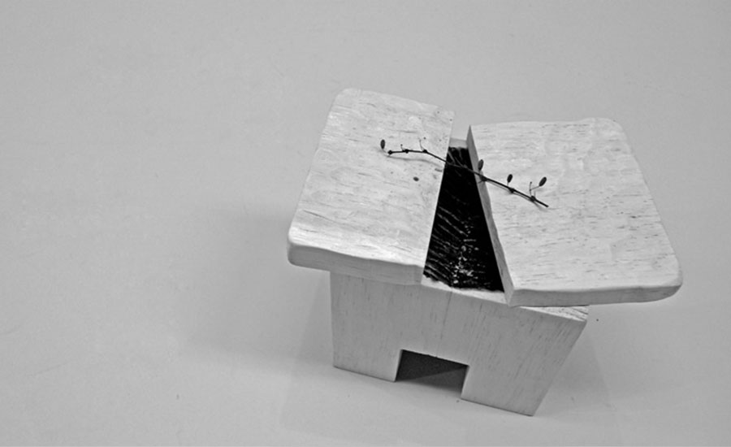
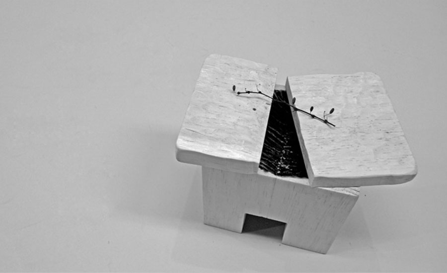
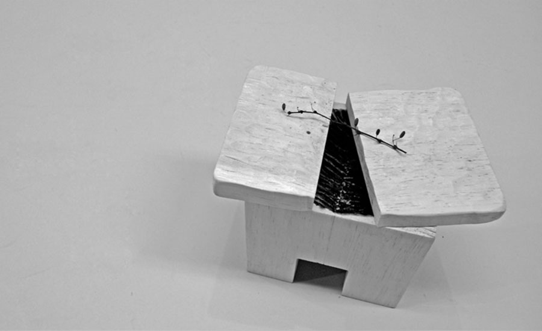
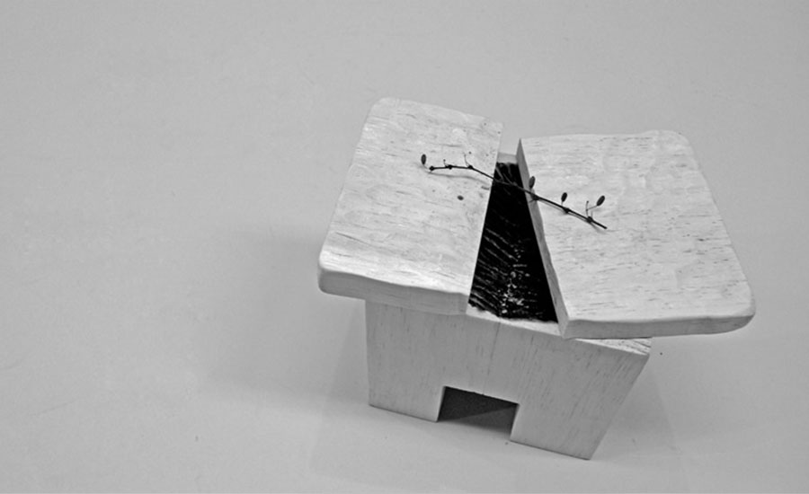

 

The Incense Holder was a final project for my wood-shop class. I was assigned to make a vessel. My idea is a vessel that holds incense ashes in a wabi-sabi way when time keeps passing by. I designed and made this Incense Holder using hand plane, band saw, power sander, drill press and wood carving tools.


The Incense Holder was exhibited in March, 2011 at the Sol Koffler Gallery, Providence, RI, the United States.